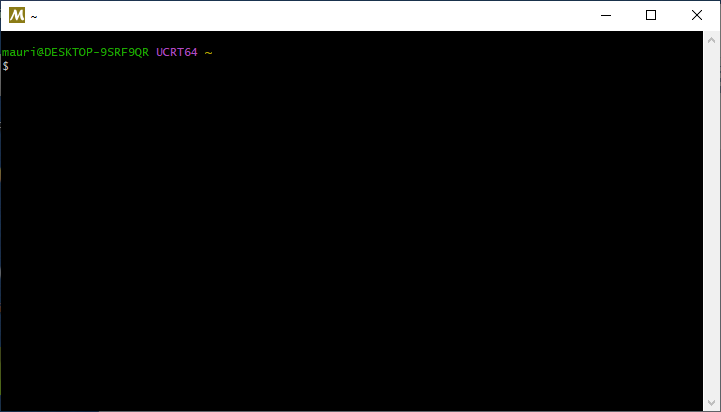

In questa pagina fornisco alcune indicazioni su come installare un compilatore C++ e un editor che permettano di sviluppare i programmi richiesti nelle ore di esercitazione.
Windows
Non è semplice installare un compilatore C++ sotto Windows che soddisfi le richieste dell’insegnamento di TNDS. La soluzione più diffusa su Internet è quella di installare l’ambiente Microsoft Visual Studio, che ha però una serie di svantaggi:
Richiede molte risorse;
Non è possibile usare il comando
makecome richiesto nelle prime tre esercitazioni;Usa delle convenzioni più complicate del necessario nel modo in cui vengono strutturati i progetti (file CMake annidati).
Le soluzioni che consiglio sono le seguenti:
Usare WSL (Windows Subsystem for Linux);
Installare Virtual Box e creare una macchina virtuale Ubuntu;
Installare MSYS2;
Installare w64devkit;
Installare MobaXTerm e connettersi ai computer del laboratorio.
Illustro ora tutte le possibilità, e mostro alla fine una tabella riassuntiva.
WSL
WSL è un meccanismo che consente a Windows di eseguire una macchina virtuale Linux in maniera semi-trasparente. È la scelta più usata dagli studenti, ma potrebbe non funzionare su alcuni computer per cui il BIOS non supporta la virtualizzazione. Se questo è il vostro caso, dovete tentare un’altra strada.
Non riporto qui le istruzioni per installare WSL, perché cambiano spesso. Seguite le istruzioni sul sito Microsoft.
VirtualBox
Oracle VirtualBox consente di creare una vera e propria macchina virtuale. È concettualmente analogo all’uso di WSL (vedi sopra), con lo svantaggio di essere leggermente più complicato da configurare. Però ha il grande vantaggio che l’ambiente di sviluppo (Linux + Gnome) è identico a quello dei computer del laboratorio.
Se avete avuto problemi ad usare WSL, è possibile che neppure questo metodo funzioni, perché richiede un supporto per la virtualizzazione da parte del BIOS.
I passaggi da seguire sono i seguenti:
Installate Virtual Box scaricandolo da questo sito;
Scaricate il file ISO di una distribuzione Linux a vostro piacimento. Una delle mie preferite è Linux Mint, ma gli studenti alle prime armi scelgono spesso Ubuntu. Una valida alternativa è Fedora, che è abbastanza simile a quella usata sulle macchine di laboratorio. Se vi chiede di scegliere tra Gnome, KDE, XFCE, Mate o Cinnamon, vi consiglio KDE: è l’esperienza più simile a Windows (nel senso buono!) che si possa trovare.
Create una macchina virtuale selezionando dal menu Machine la voce New…; nella finestra che compare indicate il file ISO che avete scaricato poco prima, e lasciate tutto il resto come da default.
Avviate la macchina con il bottone Start (da menu è la voce Machine | Start | Normal start).
Installate il sistema operativo configurandolo come preferite.
Una volta che il sistema è installato e funzionante, aprite il terminale e scrivete il comando
sudo apt update && sudo apt install build-essentialQuesto installerà il compilatore
g++.
Annotazione importante: i file che creerete nella macchina Ubuntu non saranno visibili da Windows! È possibile invece fare il viceversa, ossia far comparire una directory del sistema Windows all’interno di Ubuntu: in questo modo sarà possibile editare lo stesso file in entrambi gli ambienti. Queste directory si configurano con il bottone Settings, alla voce Shared folders.
MSYS2
A differenza di WSL e Virtual Box, MSYS2 non usa la virtualizzazione, e può quindi essere impiegato in tutti i tipi di portatile. MSYS2 è un sistema che installa una serie di programmi compilati nativamente per Windows, che però funzionano in maniera molto simile a Linux.
Questi sono i passi da compiere per installare MSYS2 e i compilatori C++:
Andate sul sito https://www.msys2.org e scaricate il programma di installazione di MSYS2.
Avviate l’installazione, accettando la directory di default
C:\msys64.Al termine dell’installazione, avviate MSYS2. Vedrete comparire un terminale simile a quello Linux:

Questo è un ambiente Windows fatto per assomigliare il più possibile a Linux.
Per installare il compilatore C++ e
make, eseguite il comandopacman -S gcc makeBisogna ricordare che MSYS2 usa una convenzione particolare per indicare i percorsi dei file: lettere di unità come
C:eD:in Windows si traducono in/ce/dnel terminale di MSYS2, e i backslash come\si traducono in/.Quindi, se con Visual Studio avete salvato un file in
C:\Utenti\Pippo\prova.cpp, in MSYS2 figurerà come/c/Utenti/Pippo/prova.cppe il comando per compilarlo sarà quindi$ cd /c/Utenti/Pippo $ g++ -o prova -std=c++23 -g3 prova.cppSe volete usare un editor da terminale dentro MSYS2, potete installare GNU Nano:
pacman -S nano nano-syntax-highlightingSe volete aprire con “Esplora risorse” o con Visual Studio Code un file creato all’interno della home in MSYS2, il percorso è in
C:\msys64\home.
w64devkit
Questa soluzione è simile a MSYS2, ma è più agevole e veloce da installare, e soprattutto è molto facile da disinstallare.
Scaricate il file w64devkit-x64-2.4.0.7z.exe ed eseguitelo. Vi verrà chiesta una directory di destinazione; potete scegliere
C:\.Al termine dell’installazione, aprite il prompt dei comandi e scrivete
cd c:\w64devkitEseguite il programma
w64devkit. Questo aprirà un terminale simile a Linux, dove potrete creare i vostri programmi seguendo le istruzioni del corso.
Attenzione: per compilare i programmi del corso, è necessario aggiungere -lstdc++exp alla fine di ogni invocazione di g++ in cui si crea un eseguibile. (Vedi questo link per saperne il motivo).
MobaXTerm
Questa soluzione è indicata se avete la garanzia di una connessione veloce. Ha il vantaggio che sfruttate i computer del laboratorio per eseguire il vostro codice e quindi avete ROOT già pronto da usare, ma lo svantaggio è che la visualizzazione di grafici e l’apertura di finestre sarà più lenta. Inoltre è complicato configurare Visual Studio Code, e vi consiglio invece di usare un programma da linea di comando come nano per editare il codice.
Il programma è scaricabile dal sito https://mobaxterm.mobatek.net/; tenete presente che la versione di default è a pagamento, ma è possibile scaricarne una versione ridotta gratuita che è più che sufficiente per l’insegnamento di TNDS.
Una volta installata l’applicazione, create una connessione SSH al computer tolab.fisica.unimi.it, indicando il vostro nome utente (lo stesso della vostra email, senza @studenti.unimi.it) e la vostra password della posta. Avviando la connessione, verrete fatti accedere a uno dei computer del laboratorio, e potrete anche avviare comandi grafici.
Tabella riassuntiva
| Soluzione | Facilità di installazione | Somiglianza con il laboratorio | Integrazione con VS Code | Prestazioni | Compatibilità del compilatore | Stabilità/Manutenzione |
|---|---|---|---|---|---|---|
| WSL | ★★★★ | ★★★ | ★★★★★ | ★★★★ | ★★★★★ | ★★★★ |
| VirtualBox (con VS Code installato al suo interno) | ★★★ | ★★★★★ | ★★★★★ | ★★★★ | ★★★★★ | ★★★ |
| MSYS2 | ★★★★ | ★★★ | ★★★★ | ★★★★ | ★★★★ | ★★★★ |
| w64devkit | ★★★★★ | ★★ | ★★★★ | ★★★★★ | ★★★ | ★★★★ |
| MobaXterm + SSH ai PC del Dipartimento | ★★★★ | ★★★★★ | ★★★ | ★★ | ★★★★★ | ★★★★ |
Mac OS X
Il sistema operativo Mac OS X già include il compilatore Clang, che potete invocare con clang++; esiste anche l’alias g++, che non fa altro che invocare clang++.
Se installate XCode dall’App Store, avrete probabilmente a disposizione un compilatore più aggiornato e strumenti in più.
Linux
Se usate una distribuzione Linux basata su Debian (come Ubuntu o Linux Mint), installate il compilatore C++ e il comando make con il comando
sudo apt update && sudo apt install build-essentialPer Fedora, usate questo comando:
sudo dnf install g++ gdb